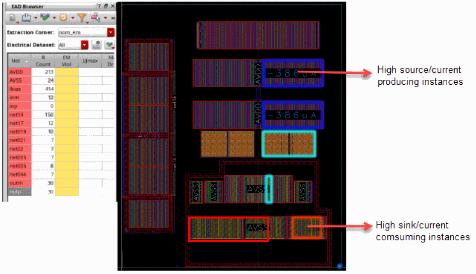
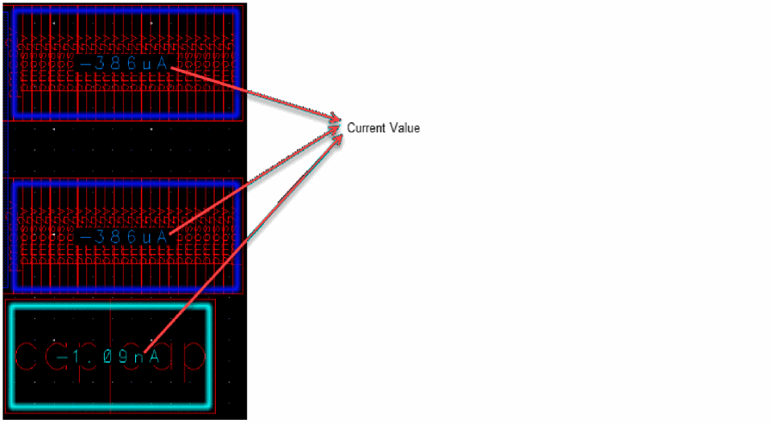
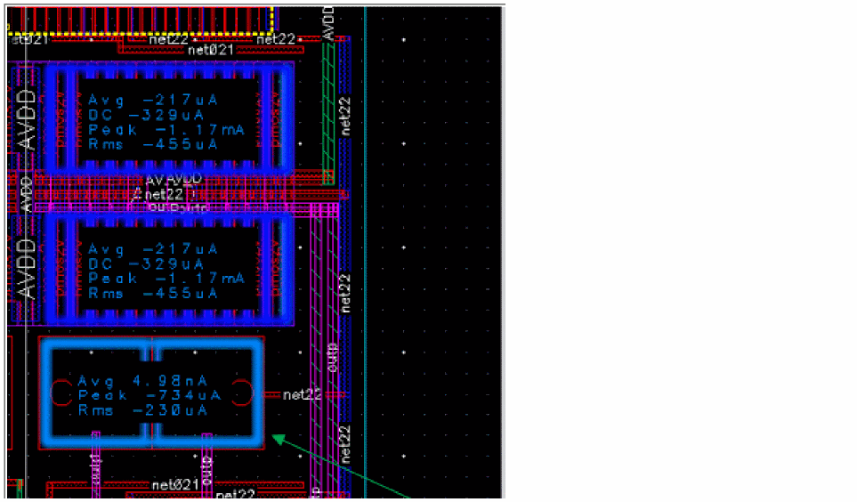

Visualizing the Current Distribution Per Net
Before starting interactive SDR routing, it is important to identify the net connections that either consume or generate the most current. Identifying the main current consumers and producers helps you to estimate the wire widths and vias cuts to create an EM-compliant topology.
To visualize the pins of a net according to their current distribution:
- Select a net from the Navigator assistant or EAD Browser.
-
Click the Hide Sources and Sinks Map button on SDR Toolbar.
The layout canvas displays the group of abutted instances of theoutpnet. The colored halo around the grouped instances indicates whether it is a current consumer or a producer. The pins or instance pins producing the current are shown with a blue halo, and the sinks, pins, or instance pins consuming the current are shown with a red halo. The dark blue and dark red indicate higher current, whereas, lighter colors indicate a lower current.
The labels depicting the current values in source sink map are displayed according to the zoom level.- At high altitude, the labels are not visible.
- At intermediate altitude, only single current value is displayed.
If the pin is big enough and theweSdrSourceSinkMapAllCurrentsenvironment variable is set totrue, all the current types (Avg/Peak/Rms) are displayed.
In case, you are unable to view the current values of the cluster, you can zoom in to the cluster and view the current value.
The source and sink map displays the maximum current value, which is highest value of each Avg/Peak/RMS, of the selected dataset. However, if multiple datasets are selected and they have different minimum and maximum values, the displayed currents are irrespective of dataset and the maximum values of each current type AVG/PEAK/Rms from all available datasets is displayed.

Related Topics
Return to top